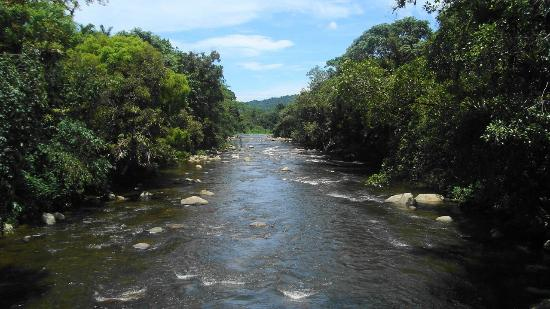
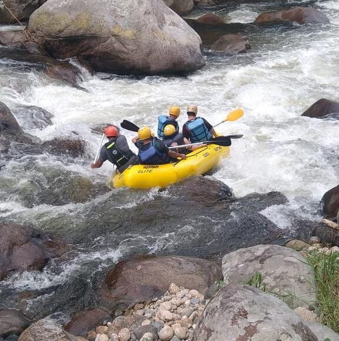
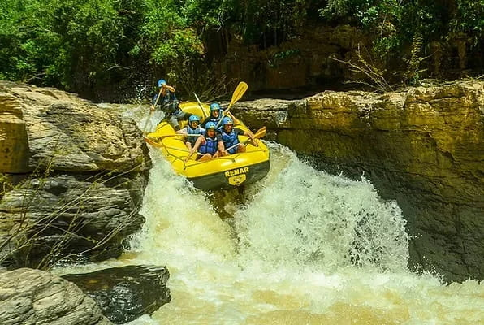

Passeios de Rafting

Rafting para Iniciantes
Ideal para quem nunca praticou rafting, este passeio percorre os trechos mais tranquilos do Rio Iguaçu. Com corredeiras de baixa intensidade e guias experientes, é perfeito para famílias e iniciantes que querem conhecer a aventura com segurança.

Rafting Intermediário
Para quem já tem alguma experiência, este trecho do Rio Iguaçu oferece corredeiras mais agitadas e paisagens deslumbrantes. Uma combinação equilibrada de adrenalina e contato com a natureza exuberante do Paraná.

Rafting Avançado
O desafio máximo nas corredeiras do Rio Iguaçu. Recomendado para praticantes experientes que buscam emoção intensa, este trecho conta com corredeiras avançadas e guias especializados para uma aventura inesquecível.
| Passeio | Dificuldade | Duração | Preço |
|---|---|---|---|
| Rafting para Iniciantes | Baixa | 2 horas | R$ 150,00 |
| Rafting Intermediário | Média | 3 horas | R$ 220,00 |
| Rafting Avançado | Alta | 4 horas | R$ 300,00 |
Pronto para reservar sua aventura?
Entre em contato conosco e garanta sua vaga nas corredeiras do Rio Iguaçu!
Fale Conosco